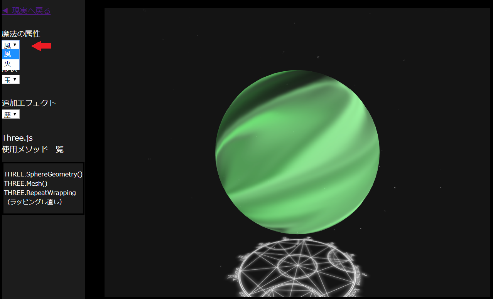
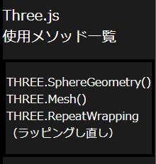

Try It !!
🗡 魔王初心者のための魔導教室 とは
ゲームの魔法のような派手なエフェクトが好き、
転生して勇者を倒したい、邪気眼がうずいて力が暴走する……
そんな魔王様に厨二気分なひとときを送るための
厨二心ジェネレーター
完成したエフェクトに名前を刻むのもよし、
眺めて妄想に浸るのもよし、レベルアップした気分になるのもよし。
Three.js で使用したメソッドもささやかに表示されるので、
JavaScript の厨二なコンテンツを作ってみたい Web 屋さんにも役立つかもしれない。
最近のWebページってここまでできるんだ！！すげー
🗡 遊び方
選んで眺める、基本的にそれだけ。
魔法ウィンドウ内で視点を変えるなどのマウス操作ができます。

現在実装されている魔法の属性。
- 風属性
- 火属性
現在実装されている魔法の形状
- 渦状
- 球体
追加エフェクト
- 塵（現在変更できません！）
Three.js ボックス（マニアックな人向け）

現在使用中のメソッドが表示されます。
詳細なソースコードを見るときに役立ちます（GitHubで近日公開予定）。
🗡 動作環境
確認済みのブラウザ
- Google Chrome
- Microsoft Edge
🗡 異世界は広がり続ける……
現在、機能拡張に向けて「レベル上げ」しております。
いずれは、Web で動くゲームエンジンを作りたいという壮大な目標があります。
たのしみにまっててね☆
🗡 お世話になったサイト
- エフェクト部分：Three.js 公式サイト
- 魔法陣：あやえも研究所
- ボタンのデザイン：GrowGroup株式会社 ブログ